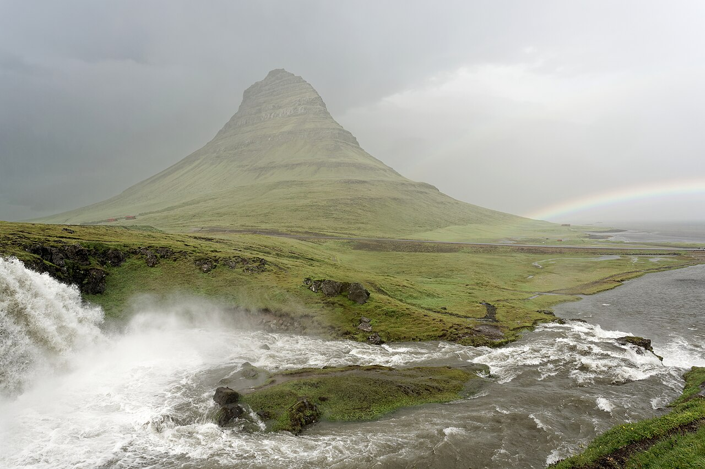

Исландия

Исландия — планета в миниатюре: гейзер Строккур выстреливает каждые восемь минут по расписанию, которое он сам и устанавливает; Гулльфосс ревёт в каньоне; а тектонические плиты расходятся прямо у дороги — можно стоять одной ногой на Америке, другой на Европе. Золотое кольцо собирает три чуда за один день, Кольцевая дорога за восемь дней переписывает ваше представление о пейзаже: Сельяландсфосс, за который можно зайти за водяную стену; чёрный пляж Рейнисфьяра с колоннами из базальта; ледниковая лагуна Йёкюльсаурлоун, где айсберги плывут к морю неторопливо, как деловые письма. Гора Киркьюфелл — та самая, с открыток. Синяя лагуна — бронь заранее; одевайтесь слоями и следите за vedur.is: погода здесь меняется быстрее, чем вы выбираете объектив. Зимой — сияние: зелёные ленты ходят по небу, как занавес, который решили задернуть с изнанки. Уезжаете с новым пониманием слова «пейзаж» — и словарём для него.
Что знать перед поездкой
- Кольцевая дорога — аренда машины осенью
- Синяя лагуна — бронь заранее
- Погода меняется быстро: следите за vedur.is